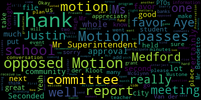
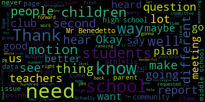
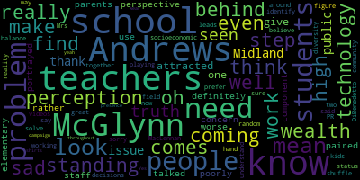

AI-generated transcript of Medford, MA School Committee - Oct. 2, 2017 (Unofficially provided by MT)
Back to all transcripts
[Van der Kloot]: Scurry will call the roll.
Mrs. Cuneo?
Absent.
Mrs. DiBenedetto?
Present.
Mrs. Kretz?
Here.
Mrs. McStone?
Here.
Mr. Scurry?
Present.
Mrs. Vander Kloot present.
Mayor Burke?
[Burke]: Present.
Six present, one absent.
All please rise and salute our flag.
And while you're all standing, if you could just remain standing so we can take a moment of silence for all the victims of the horrific event that happened in Las Vegas, as well as those that were injured.
Thank you.
Approval of the minutes of the September 18th.
Is there a second by Miss Vander Kloot?
All those in favor?
Mayor Burke?
Mr. Benedetto?
[DiBenedetto]: I had a question on... So, we were talking about...
additional students that come from new developments.
And we requested our report be given to us in January.
I just want more detail about what was requested.
I think I said I would like
units of a hundred and above instead of the hundred and fifty and we would like to try to capture non school-aged children as well as school-aged children so we can pre-plan in our budget.
So I would like that noted in the minutes as well as on the back of our requested reports.
[Burke]: On the motion for adoption of the minutes as amended by Mr. Benedetto, all those in favor?
All those opposed?
Motion passes.
I also want to take note that we have Justin Tang with us tonight.
He's the student representative from Medford High School, so welcome Justin.
Thank you.
And Justin, feel free when we're discussing any matters, if you want to interject, just raise your hand and we'll acknowledge it.
Thank you.
Approval of bills transfer of funds.
Motion for approval by Mr. Skerry.
Mr. Benedetto.
[DiBenedetto]: Kirsten Kirsten's not here, but I Okay, so my first question is in tuition reimbursement features I saw a lot of line items for that and I just didn't know what the policy was for tuition reimbursement because just in this bill Approval we have seven thousand six hundred and eighty four dollars in tuition reimbursement for teachers I don't know how teachers apply for that.
I don't know how it's allocated
[Belson]: So in the teacher's contract, okay, we put in during the last negotiations a piece that allocated $30,000 in year one and $40,000 in year two for teachers to take individual courses and be reimbursed up to $1,000.
What you're seeing in that line, in those line items, is reimbursement for that purpose.
[DiBenedetto]: And could you just explain how teachers apply for that and how they've been notified that they have that option?
[Belson]: They apply for it through the deputy superintendent's office.
He reviews it.
It's first come, first serve.
We obviously review it for graduate credit to make sure that it's consistent with educational purposes.
We approve it on a first come, first serve basis.
When they provide the credentials and the evidence that's been completed, we pay it.
[DiBenedetto]: And now that you say that, I do remember approving that piece of the budget, and I'm glad to see it started.
[Van der Kloot]: I just wanted to mention that as your secretary, when I go in and sign the bills, I see all of the lists of teachers who've submitted paperwork to get reimbursed.
And I get to see what courses they're taking, what grades they've gotten, they're doing great.
And so I've noticed there were a lot that came in probably because the teachers took them over the summer in recent and that's the line item you're seeing but I have looked at every single one.
[DiBenedetto]: Thank you.
I have a few more items.
My second item is on page 3 of 16.
It's for $3,395 and it says Meffitt High School miscellaneous charges.
Does anybody have a recollection as to what and the payment was the vendor was method high school So I was just curious what that was this is for the hockey clothing, okay?
Hockey uniforms
Okay, and the next item is number three.
An athletic official on page 11 of 16, an athletic official bill was paid $10,220.
That just seems so much higher than most of the other ones, and it just caught my eye.
[Belson]: So that is for our fee to the Northeast Conference, which we have now joined.
The individual named is the coordinator for that conference and check is made out to the conference Okay, cuz yeah, it just strictly for her You know for the for the FIFA instead of the GBL.
We now belongs to the Northeast conference
[DiBenedetto]: Okay, I was just curious, because it said an individual for that large amount of money, just seemed worth bringing up.
And number four is on page 12 of 16.
It says net sports group $8,998, and it says the reason is unclassified.
So I was just wondering why that wasn't classified, and exactly what that was.
[Belson]: If you can tell me the item, I'm not sure what you're referring to.
[DiBenedetto]: It's on page... Page 12.
[Belson]: That was a refurbishment of the field every work on the turf fields and that's for rubber refer re-infer refurbishment of that field.
[DiBenedetto]: Good thing to do.
Thank you for clarifying those questions.
[Burke]: On the motion that the bills and transfer of funds be approved.
All those in favor?
[DiBenedetto]: Aye.
[Burke]: All those opposed?
Motion passes.
approval of payrolls.
Motion to approve.
Second.
All those in favor?
Aye.
All those opposed?
Motion passes.
Report of secretary.
There is none.
Report of committees.
Committee of the whole.
Mr. Superintendent.
[Belson]: So we had a committee of the whole on the vocational and high school merger.
You have that in your folder.
If you choose to read it, usually it's read by the secretary.
If not, you can just simply waive the reading and just simply accept it.
[Kraetz]: I have some questions.
We'd like it read, please.
Ms.
Fritz has some questions.
Superintendent, I was a little confused about the motion, so I had sent some inquiries over to Dr. Perala and the director of guidance.
But what I found out through email communication was that's something that's not possible.
You know, currently there isn't a way in Naviance to add a notation on the transcript
or add an additional document, or attach a separate page.
So what they can do is the guidance counselor can write a letter of recommendation on behalf of the student, providing the information about the class rank, what the student was prior to the merger, and the student can complete a brag sheet, and that can help the guidance counselor write the personal accomplishments about the student.
but you know this is all through communications so I was wondering if you know we can I'd like to make a motion you know to invite the headmaster and the vocational director back so we can get like the final details about the class ranking because this was just me going back and forth because I was a little confused.
I thought it was gonna be something different than what we motioned for.
[Burke]: On the minutes of the meeting of the committee of the whole the motion says that
[DiBenedetto]: I requested to have separate rankings in quarterly meetings.
That's not exactly what I had motioned for.
What I had motioned for is a separate internal ranking, so that way we know which students in the vocational school and their class rank.
I believe that's how I remember it correctly.
And I also asked that a notation be presented on the transcript.
And if that's not possible,
then I strongly agree with my colleague that the heads of both schools as well as the guidance department needs to come to us and tell us that our motion isn't possible and to present us with what options are possible and how we're going to move forward with this.
because this is a very important issue for our seniors and our juniors.
At least with our sophomores, we have time to notify them of this change.
It's still gonna be hard for that level, but at some point, we need to merge them in with the high school rankings, because we do have one code now, and that's how we report it.
but we need to make some adjustment for these two years, I believe, and that's why I made the motion, and that's why it was approved unanimously.
So I'm agreeing with my colleague's motion, and I hope that happens very quickly, because this is affecting students that are already sent out applications to colleges, so I motion that it be done immediately.
[Belson]: So we'll bring them down to the next meeting, and I'm sure it can be done.
[Van der Kloot]: Yes, the only thing is of course the the some of the kids are already beginning to apply to college So there is a timeliness issue and I too have a different recollection than what's here because I remember asking very specifically that whether we could continue for just as a transition period that the
kids GPAs be listed as they are now as a vocational program.
It says here, Dr. Perrella said that we can create any list you want, so don't worry about it.
I was definitely surprised when all of a sudden I was told that it wasn't working the way that we expected.
Mr. Superintendent.
[Belson]: Why don't we get a clarification out this week.
When I see Dr. Perrella tomorrow morning, we'll send you a notification as to what they can do.
And if it can be done the way you want it, we'll do it right away.
And if there's some other issue that has come up, they'll explain it and we'll deal with it.
[Van der Kloot]: So I would like to lay the paper on the table.
[Burke]: She asked for a motion to have them appear if they're not able to rectify it in the next week internally.
[DiBenedetto]: Could we warrant, would this warrant an emergency meeting because of the timeliness with children's transcripts?
So as a school committee member, I'm making a motion that if they can't rectify this by the end of this week that we have
meeting at the beginning of next week.
So I need someone to second that motion.
I'll second it.
[Burke]: It's a second by Ms.
Mustone.
All those in favor?
Aye.
All those opposed?
Motion passes.
Ms.
Kretz, did you have another question?
[Kraetz]: I know it's not an emergency matter, but I just thought it would be a nice report if we could get a report on the breakdown of how many students are in each co-op shop and where they're working.
It was just something really interesting, but it's not an emergency report.
So I'd like to make a motion for that.
[Belson]: So you suggest that, what do you call it, you give us another month to do that because people are still being placed and this will be a very
Transitory report this early in the year.
[Burke]: All in the motion that a report of all the co-ops and internships that are being held by our vocational and high school students be delivered by staff, if need be.
Seconded by Ms.
Mustone.
All those in favor?
[Kraetz]: Aye.
[Burke]: All those opposed?
Motion passes.
Otherwise?
[Kraetz]: And I just had one more.
I wanted to inquire about one shop in particular.
It was the robotics engineering.
Originally, the robotics engineering has been the traditional vocational program, and it's going to be switching over with the graduating class of 2018.
And just recently, there's been a development where there is
there is a co-op opportunity for the robotics engineering students so I just wanted to bring that up and if it could be revisited for the future students if they were interested in the co-op plan it would be ideal and I was out this weekend
going out doing the college tours and what we saw was at Wentworth they had the same equipment that we have in our robotics engineering shop and my son, he's been involved in the program, he knew all the names of the machines and in fact we have newer machines than they have
You know, they have like a five-axis and we have a three-axis, but he knew all the machines and they had the sheet metal shop, and it was just really fascinating to see that our Medford Vocational School has that equipment that's college-ready, and when they shared some information about their co-ops, their students are college students going out and getting co-ops, and they're starting out at $15 an hour, and that's what our vocational students are doing,
in that particular field, so I really think it's important to have another look at the robotics engineering program because there might be an opportunity for it to remain as the A week B week program and this was a new development that came about recently for an opportunity for students.
I would like to make a motion to have that revisited.
[Skerry]: Second.
[Burke]: On the motion, let that be revisited.
Seconded by Mr. Skerry.
All those in favor?
Aye.
All those opposed?
Motion passes.
Very good.
Is there a motion for approval of the Committee of the Whole with those additions being looked into?
On the motion for approval.
All those in favor?
Aye.
All those opposed?
Motion passes.
Thank you.
Okay, community participation.
McGlynn Middle School teachers on Medford Public Schools Action Plan.
You name and address, please, for our record.
[Villard]: Brian Villard, 221 Summer Street, Somerville, Massachusetts, 02143.
Sherry Flint, 35 Fay Street, Boston, Massachusetts, 02118.
[Haas]: Patricia Haas, 205 Elm Street, Medford, Mass., 02155.
[Villard]: Good evening, Honorable Mayor Burke, ladies and gentlemen of the school committee, Superintendent Belson, Deputy Superintendent Nelson, we, the teachers of the McGlynn Middle School, are here in response to item number seven under the report of the superintendent, dated September 18th, 2017, entitled McGlynn Action Plan.
After each of us watched this meeting, we came together as a staff and discussed our disappointment regarding the lack of our voice and input being included in this action plan.
We feel that the McGlynn was misrepresented and our achievements overshadowed.
We are the teachers of the McGlynn and we are here because we care.
We are proud that the McGlynn Middle School is unique in the city of Medford.
Our school houses the population of students that is most diverse in background, ability, language, and culture.
Our school is home to the entire Medford Middle School EL population.
Last year, through our inclusion model, we serviced a population of almost 60% high-need students.
Each day, our staff rises to and celebrates the challenge of not only educating, but also of meeting the social and emotional needs of the whole child.
Teachers and staff do this by creating a community of respect and of excellence.
We value all of our students, and we do all we can to help them excel both academically and socially.
[Flint]: We are the teachers of the McGlynn, and we are here because we care, and we are dedicated.
The teachers and staff at the McGlynn enthusiastically devote our time and resources to make the building better on a daily basis.
Students at the McGlynn enjoy a variety of staff-run extracurricular activities, including Drama Club, National Junior Honor Society, Builders Club, Student Council, the interactive morning news program, yearbook, art club, a rock and roll show, talent show,
chorus program, a school-wide multicultural holiday sing-along, a gold medal winning string ensemble, and numerous other activities based on student interest.
Not only do we dedicate ourselves to these extracurriculars, we have repeatedly volunteered to advise these clubs and many others, often without response or support.
Do we desire even more extracurricular opportunities for our students?
Absolutely.
However, permission to move forward, financing, and support continue to limit aspirations of those who wish to bring in additional programming and opportunities for our students.
We are the teachers of the McGlynn, and we are here because we care, and we want the best for our students.
We want every student to have the most advantages and educational opportunities possible.
This requires us to continually collaborate, communicate, and cooperate to ensure the best educational environment possible for our students.
The more stable, healthy, and professional the relations between the staff are, the more we are able to provide a stable, healthy, and supportive school climate.
Therefore, it was disappointing to hear that over the summer, staffing decisions were made based on our backgrounds, talents, and relationships, without the knowledge, without the involvement, or without the input of the most valuable resources available, the staff.
So as expected, the conclusions and actions, which were based on incomplete and erroneous information, do not match the stated needs outlined in the McGlynn Middle School Action Plan.
We'll go into that in details, not now, but we're prepared to do so in another forum.
[Haas]: We are the teachers of the McGlynn, and we are here because we care and we ask to be involved.
We are a vibrant and energetic staff and care about each other and our students.
We maintain pro-student attitude no matter what challenges are presented to us.
We work together in teams, our work families, and as such, advocate for whatever program, resource, or placement is best for our students.
In previous years, we have come together as a staff to address building concerns, which we brought to every level of administration.
The concerns we have voiced through the years and today are not complaints about our work.
They are pleased to the administration for help in the hopes that together we can make our school excel.
When there are concerns about our school, good management practices dictate that we should be involved in the process, both in identifying the issues and determining the solutions.
We are a valuable resource in which you invest.
We ask to be part of the solution, not demonized as part of the problem.
Because we care, we ask to work with you and the administration to make the McGlynn the best it can be.
We are the teachers of the McGlynn and we are here because we care and want our voice to be heard.
We believe that education is not about competing with other schools or even each other.
It's about fostering an inclusive community, one that is committed to excellence and meeting the needs of the whole child.
School and learning are not a competition with a strict and inflexible finish line.
Education is not a prize to be won.
To engender this type of competition will only harm the good that our schools are doing.
Only by coming together can we ensure that all students see what we know to be true.
They are important.
planning someone else's success only to denigrate another, what values are we teaching?
By dictating rather than communicating, what message are we sending?
Reform should be made with us, not at us.
So we are the teachers of the McGlynn.
We and our students' voices deserve to be heard.
Thank you.
[Burke]: Thank you very much, teachers of the McGlynn.
We appreciate your comments and your spirit.
Certainly, that means a lot to the children of this community that have chosen to go to that school.
Several of them, many of them, are delighted to hear you tonight, I'm sure.
Thank you.
Mr. Superintendent.
[Belson]: Mayor and members of the school committee, teachers of the McGlynn, ladies and gentlemen.
We respect the teachers of the McGlynn.
We respect the McGlynn school.
We have two very fine middle schools.
We never said that we didn't.
But we also said that there's a public perception out there that one school is more attractive than the other at this point in time.
Several years ago, it was the other way around.
One school drew more students than the other school.
And this year, there was a significant imbalance in grade six coming up based on parent perception, based on what parents were telling us about the program.
Now, whether they're right or they're wrong,
Our goal was to restore that balance, and our goal was to bring everyone into the picture and create ownership so that we would all move forward and change that imbalance.
That's not an indictment.
That's an attempt to try and say, let's do something about it.
Now, the action plan, our suggestions and things that we've put in place.
Yes, there were some moves that we made by reassignment, but that's the right of the administration through the contract with the Teachers Association.
We have the right to reassign people, and we did talk to union representatives, and we did try to negotiate something, but it broke down.
My point right now is that I welcome your interest in working with us going forward.
And I encourage it, because the only point we're trying to make right now is we have to own the issue.
Right now, public perception is one school is more attractive than the other.
Our goal is to change that perception, to let them know how much you are doing for their children, to work on the distribution of population, and to try and move it forward in a very positive way.
So I welcome your involvement.
That's all we ask for in our discussions with union representatives.
One of the key points was everyone would collaborate and work together.
everyone would collaborate and work together.
So I welcome it.
We'll come down.
We'll have a nice meeting.
We'll talk about what we can do, what we can't do.
Some of the things we're putting in place, including our deputy superintendent gave out to the committee some materials on clubs that have been expanded.
Certainly, every budget has its limitations.
You can't do everything that everyone wants in any one year.
But there are expansions of clubs and activities which we think are extremely significant, and we're listening to you.
And all we ask is that we tackle it together so that as we go forward, when people are making choices next year about where they want to go to middle school, that it will balance out.
That's all.
And that we'll work forward to it.
And if there are other things that have to be done, we intend to do them with you.
Not to you, with you.
But we need everyone to accept that and work together with us as well.
So I look forward to it.
I appreciate you coming down.
I appreciate your courage in speaking.
I think it's really good.
It's really a good stimulus that you got up here tonight and you spoke and you said who you are and you're proud of who you are.
I applaud that.
I think that's great.
Let's keep it going.
Let's do it.
[Van der Kloot]: I just want to say that I personally was very disheartened when I heard that the teachers reaction was that he felt that demonized and less so I would felt very very sad because that was certainly I don't think Our intention school committee members or or maybe even the superintendent.
I'd the the reality was that we have
gotten a lot of calls from parents whose kids were not being able to be placed in the school of their choice where their friends were.
And this is a real dilemma for us because it has snowballed.
I still am receiving emails from one parent who tells me how upset their child is because she has been separated from her friend back.
And for me, this has become this sort of like, how do we solve this issue when all of a sudden one group of parents is selecting a school and that those who weren't able because we
We want to keep class sizes reasonable and it's not appropriate to have one school with, we can't go over contractually the class size limits nor would we want to.
So this issue of friends and how do we, how do we,
tackle this issue so that we don't have an imbalance.
I have been to the McGlynn School.
I think you guys are great.
I've had wonderful experiences, wonderful opportunities to be at the McGlynn School.
I certainly would be comfortable to send any child of mine to the McGlynn School.
And because I have history, as many of us do here, we know
that there has been some times where the balance goes one way and then the balance goes the other way and if I blink my eyes another year it's going to go back the other way.
From a school committee perspective I need to parents to feel
good about the choices and this issue of friends, of what happens when my friends go there and it snowballs is real key for me in trying to figure that out.
That's why we've been talking about saying we want to add after school activities where kids from both schools can attend so that a club will have friends and the kid won't feel so bad about being at the other school.
I know from some people, their kids have acclimated in a positive way.
Once the parent went, once the kid went, it's fine.
But the angst that we saw and heard this summer was huge.
Anyway, thank you so much for coming down, and thank you for the work that you do for our kids every day.
[DiBenedetto]: Thank you.
So I didn't hear that the teachers were upset until I saw the large group outside tonight,
actually happy to see a lot of you because I haven't seen you in a few years because both my children graduated from the McGlynn Elementary and Middle School and then Medford High School.
So it was really nice to see you all and see you still dedicated and acting in such a group way, such a team building way to represent yourselves in such a
A difficult thing.
I'm very sorry to hear that you felt slighted.
When my children were going into middle school, it was hoping that they would get into the McLean.
So, when I hear the difference now with the Andrews, you know, it's like we all say, it goes up and down at different sides.
To hear that you're educating 60% of the high needs students in our district in middle school, that's a lot.
60% of your students in your school being high needs.
That's a tremendous job that you're doing every day and you're representing
in servicing children with very, very significant needs, and you're doing it really well, because if you weren't, I would have known that, right?
I would have known that and heard that, and that we would have had an issue.
We never hear of that.
The only thing we do hear is our friends are going to a different school, and you know, the emotional impact that has on people's children, and that breaks my heart,
the social emotional well-being of a child is so important to their education that we need to listen to how that's affecting people.
And all our intention was last week is to find ways to make the McGlynn, their marketing, their PR, to let people know about the wonderful things and the wonderful teachers that you are.
so that parents are aware of it.
It wasn't to say, well, the Andrews is better, how are we gonna make the McGlenn better?
We know you're better.
We never even thought for a second that you weren't better.
It's just maybe you need a little bit more PR.
Maybe your clubs need to be published a little bit more.
Maybe we need to have the paper there to celebrate some of your things.
In other ways, that's how I looked at it.
Or, if you did need more money for clubs, I did that, I believe, last week.
I don't know why I don't have that.
Maybe we need to do that, and look at those type of things.
But it was never, never that you were dedicated and wonderful, because that has never come to any of our attention.
And I am so grateful that you were comfortable enough to go forward and speak for yourselves in this manner, that you thought that we had that impression.
And that's far from what I thought.
So, I am grateful to see you all.
I hope you understand that we are here to help in any way that we can.
And if you have ideas, we want you to bring them forward.
You're in the front line and you know better than anyone else in this room what you're doing every day and what needs to be celebrated and what needs to be sent out to the parents and the community as a whole.
So your input is most valuable.
And I'm always willing to hear that.
And I'm willing to make other people hear it.
Because I have a big mouth.
So welcome and thank you for coming.
And I'm sorry that if it was an impression that wasn't pleasant for you all.
Thank you, Mr. Benedetto.
[Burke]: Justin would like to add to this conversation.
[Tseng]: I'd like to thank the teachers of the Midland, my teachers, for coming here and standing up for yourselves and standing up for your students.
I think what we have here is an issue of, you know,
the public is more attracted to one school than the other.
But we need to find out why.
And I can give you my perspective on why.
It's not that McGlynn teachers are worse than Andrews teachers.
It's definitely not that.
Because I've talked to students coming from the Andrews and to parents who have students at the McGlynn, at the Andrews, or even in the elementary schools.
And that's not their concern.
It's not that the staff at the McGlynn is poorly paired or it's
that it doesn't work well, but rather that the Andrews just, they look at technology, and they look at a component of who's at the school.
And there's a perception that the McGlynn is a step behind the Andrews when it comes to technology.
And there's also a perception that the McGlynn is a step behind the Andrews when it comes to wealth, and how we use that wealth, and how that's portrayed in our socioeconomic status.
And what we really have to do is look at, you know, these are the problems.
How do we solve these problems?
Not that, you know, oh, you know, the teachers are the problems or, you know, it's about working together.
You know, we shouldn't make random decisions when we don't have to.
If we know that teachers aren't the problem, we shouldn't shuffle them around because it doesn't really work that way.
We need to identify the problems that we have at hand.
And that means 60% of McGlynn kids are high need.
How do we find out, how do we figure out that balance between the two schools?
And I'm sorry to say it, but I don't believe it, but that 60% of students are high needs, and the diversity of school leads some people to prefer the Andrews over the MacLennan.
It's a sad reality, it's a sad truth.
And it doesn't mean that it is the truth.
It's just what people think.
And just like Mrs. DiBenedetto said, it's about PR.
And we need to make sure that people in our community understand that both schools have great teachers and that we even out the playing field for both schools from now on.
[Van der Kloot]: I'd say clearly you guys did a great job.
[Burke]: Justin certainly should be a recruit for your PFA.
And he certainly should be sharing those stories.
And I'm sure there's many graduates.
One of mine went to the, two went to the McGlynn, one went to the Andrews.
You know what happens every year they kind of pick different schools even though they all came from the Brooks But Justin and other graduates certainly could be great spokespeople for for the school as well as you because you did a fabulous job tonight We're really really proud to have you here.
You said said it all
[Kraetz]: I want to thank you all for coming out tonight, and it was just such great spirit It was great hearing from all of you.
It was just wonderful, and you know what great work You're doing at the school, and you know it's coming from my other colleagues is that we were just you know talking about the different the clubs and the students want to go to one school and and
You know, we're trying to find an equal balance, but we are very grateful to all the hard work that you do every day at the school.
I've been out to the McGlynn when I went first term, and I had the best experience in the fourth grade class going to see the hydroponics project.
I helped organize a field trip between the McGlynn and the vocational school and it was just fantastic.
I had the most fun and been to the concerts and everything.
I just love it there and it's just a great school and thank you all for what you do every day.
Thank you.
[Mustone]: Ms.
Stone.
Thank you all for being here.
I do appreciate it.
And Ms.
Haas, am I saying it right?
So one thing that you said that really stood out for me was just looking for support, fundraising, and opportunities.
So if there is steps that
we can move forward, like this is a great conversation, but it's just the beginning of really getting to what you need.
If you want to, if we could start a regular dialogue, or if you have ideas that you need our support and fundraising and help, we would all be happy to do what you need.
So thank you for being here.
[Burke]: Thank you.
Mr. Sperry.
[Skerry]: Just following up on my colleague's sentiments, again, thank you for being here.
If you could choose one or two things that you really need now, what would it be?
One or two major things that are in reality that we can do to make your life easier.
Respect.
[Belson]: Mr. Superintendent so I hear you adversity brings opportunity and we should collaborate But I can't let one thing go
We did meet, you know we met, and we had discussions, and we brought people in, and we talked about it.
Now, it didn't end up in a positive result the way you wanted it, but we did meet.
Now, we did meet, and it could have had brought some changes, but we couldn't reach an agreement.
So, you know, I'm not blaming anybody.
This is not a blame game.
What this is is an attempt to say the best result for all of us is to collaborate.
So ownership, good results happen when everyone's ownership is resolved.
We're here to help you.
We want you to win.
I don't win as superintendent if one school's not doing well.
I only win when everyone's doing well.
And so I want you to win.
The school committee wants you to win.
We all want to do it together.
And if this is a clarion call to do more, then let's do more.
That's all it is.
It's a chance to say, okay, you came out, you showed a little spirit tonight, great spirit tonight.
You spoke extremely well.
Justin spoke extremely well.
Next step is collaborate, move forward, listen to any suggestions you have, and let's move forward in an intelligent way.
And next year, who knows?
You might be even over-enrolled.
[SPEAKER_11]: Just to clarify, yes, we did meet over the summer on numerous occasions.
And yes, the communications did fall apart.
However, when that report was given up, it would have been nice if our voices were
[Belson]: I don't want to go back and forth.
I know that you had conversations with the Deputy Superintendent.
About many of the items in it.
But at any point, it serves no purpose to go back and forth tonight.
The issue tonight is your voices are heard, you are respected, we want you to know that, and we want to work with you, and we look forward to doing that in the weeks ahead.
That's what you need to take home.
[DiBenedetto]: Mr. Benedetto.
Mayor Burke, I'd like to make a motion that the administration meet with the teachers of the McGlynn to go over some of these concerns and come up with an action plan together and present the new action plan to the school committee in one month's time.
I need someone to second that motion.
Second.
[Mustone]: Not just administration, we should be there too.
[DiBenedetto]: Well, yes, but at the very least, a meeting with them to work on a new action plan that needs to be presented.
Second.
[Burke]: On the motion that a meeting be held in the next month for an action plan to be developed inclusive of the teacher's comments.
Seconded by Ms.
Mustone.
All those in favor?
Aye.
All those opposed?
Motion carries.
Okay.
Thank you.
Thank you very much for coming out today.
We appreciate it.
Oh, sorry.
Wait, hold on.
Sorry, sorry, that's okay.
[McKillop]: Dave McKillop, 94 Rockland Road.
I just want to speak on this because really basically you folks have to realize that you are the coaches, basically, in a team.
The morale for the teachers, the morale for the students, and the morale for the parents has to be upheld.
for the city school committee to sit there and not know that we're at 60% for special needs is unheard of.
I mean, you folks should have this information.
You should know that.
[Burke]: We do have that information.
That wasn't implied that we didn't know about that information.
It was clarified.
They put that in there.
[McKillop]: OK, secondly, basically,
Why not get into the school and work with them and try to educate yourself in the respect of what's happening in the teachers and the classes and getting out there and being able to visit that school and help build the morale.
You also mentioned the fact that there has to be, maybe you need better marketing.
You folks are the marketers.
You're the ones who have to market that school.
The comments that were made a couple of weeks ago at the last school committee meeting was not marketing.
It was derogatory and these folks
have come together loud and clear and said, hey, we need your help.
You folks create the plan.
We'll execute the plan as best we possibly can.
And they need that support.
And collectively, yes, this is a great start.
But you have to take it an extra step and not wait for them to come to you again.
You have to get to them and make this happen cohesively.
[Van der Kloot]: I just would like to respond to you, Mr. McKillop.
I think we need to keep something in perspective.
Up to this point, up to this year, in the recent years, if you look at our numbers, there's been a very sort of equal distribution between the schools.
The school committee members have been to the McGlynn.
We know many, many of the faces that are before us.
We've gone to many different events.
We celebrate the McGlynn, and we celebrate the Andrews.
It is wrong to say that we didn't know that 60%, okay, that was something which our great speaker talked about tonight, but we know that, and we may have to look about that.
Is there a perception because
of that number, that certain parents that are saying, and I think Justin did a fine job alluding to saying, hey, is that being so, parents are saying, oh, well, I want to go to this school instead.
Those students are great students.
I know them, and I love them, and they're fantastic students.
But you know, not everybody necessarily knows them when they're choosing the school.
So I don't really need you to be here tonight to lecture us about what we're not doing.
We need to keep this into perspective.
We've had a fine working relationship with our wonderful teachers across the district.
This year, late in the spring, when we had selection, we discovered we had an issue, which caused us to sit back and say, whoa, what's going on here?
Because all of a sudden, we have these students who are very upset because their friends are going elsewhere.
Okay.
Nobody called me.
Not one parent called me and said, I don't want to go to the McGlynn because their teachers are no good.
Not one.
What I heard was, I want my student to go to the Andrews because that's where his friends are going.
And it's that how do we block up then?
How do we make this division of friends going groups of friends so that kids don't feel isolated?
That's what is I've heard over and again.
That's why I said I was so dismayed when I heard that the teachers felt somehow or another that we were thinking that they were lacking because that wasn't true.
So I just I need to keep it in perspective Okay, I need not to create an issue where there wasn't an issue.
I appreciate the teachers coming forward I need you to remember where this came from and that's the problem.
[McKillop]: We're trying to sign just simply clarifying that you know what we were kind of
Throwing it out there that you maybe you need better marketing I mean we are the marketers that that before the school and that's really something that needs to be clarified Point taken in the respect of that, but I also listened to the teachers and they were telling me time and time again They tried communicating consecutively with the administration and fallen on deaf ears Those are the things that need to be addressed immediately and those are the things that just that that's what I just bring to light we can we can
Appreciate everyone coming together.
We can appreciate the fact that they came together as a team But I think the reason why they came together as a team is there's been a growing frustration.
This just doesn't occur overnight There's a growing frustration and that's all I wanted to bring to light and that's what's where the expertise of you folks Can can change that dramatically and getting involved in exactly what it is that they're frustrated with Thank you, thank you Mayberg and thank you, mr. McCullough
[DiBenedetto]: First of all, I'd like to clarify, 60% of high need students is not special education students.
Those are students, when they take state level exams, they fall into different classifications, either ELL or different subgroups in that way.
So there's a lot of different combinations that could be.
So I just didn't realize that it was at 60% capacity.
I knew our needs levels were different, and I knew that they housed the ELL program.
So that would raise the number, but I just didn't know that it was at that point.
So just so everybody in the community knows, there's not 60% of the students at the McGlenn Middle School that are special education.
They just fall into either financial need, or ELL need, or different types of subcategories that are tested on standardized testing.
The second part about PR is yes, we are all responsible for PR.
And as a school committee member, I myself feel that way too.
In any way I can help and do that, I am more than willing to do that.
And just to let the community know all the positives of both our middle schools.
And as far as going out and
participating in the schools.
I was actually at the exercise group at the elementary school at the McGlynn last week trying to do hula hoop.
It didn't work out very well in my favor.
But I am trying to like pop into different things throughout the community and just see what's going on.
So like renew my own knowledge of each school too because my children have graduated and moved on and it's good to go back and
I went to parent night up at the high school as a freshman parent would and sat in the audience and just heard what questions were being done.
So I know myself that my colleagues attend a lot of different things and a lot of them have school age children and are in the buildings at all times.
And for me I have to make more of an effort to do that because my children have graduated.
So as far as that goes, that's the issue.
By requesting a meeting.
to have their input for a new improvement plan or updated plan, not really improvement plan.
A plan.
Just a plan.
[Skerry]: A plan to.
[DiBenedetto]: An action plan.
Sorry, it went out of my mind for a moment.
My motion was to have a meeting on that because I want the teachers at the table and I want to be at the table as well and I want the superintendent to be there because we all need to be heard, not just us up here.
and you were heard tonight, I hope you feel heard, in a different way, but with concrete items to talk about would be good.
And we might come up with the same or similar action plan in the end that's already been before us.
It's just that you might feel like you were heard and part of the process better, which is just always great.
So I'm hoping, and I agree with you that that needs to happen more and more often from this membership.
So thank you for bringing those concerns forward.
[Viglione]: Name and address, please.
Joe Villione, 59 Garfield Ave.
The teachers want to be partners in progress, and I applaud them for coming here.
It's great.
What I want the teachers to know is that this very school kept a Chapter 74 board.
in private.
There were no open meetings.
So the Attorney General's Office determined on September 19th that this very school's Chapter 74 board failed to put the open meeting law out there for the public.
So there is no participation here.
There is no transparency.
You teachers are to be commended because you put your necks on the line with the people that do the hiring and firing.
There's some very fine people on the school committee.
but there's other people that I think deserve term limits.
This is what's wrong with this community.
There is no inclusion.
They say there's inclusion, there's partners in progress.
I don't feel like a partner in progress and the teacher's fantastic speech.
I am just very, very in awe that you would come here and do that and they need to be heard.
This school committee, Mr. Belson, Mayor Burke, they need to be heard and they need to work with you as partners.
don't shove them away as many in this community feel.
It's polarized, and we've all been shut out.
It's time to open the doors and be a partner in progress, Mrs. Burke.
It really is time to be partners with us, because we live here too.
And I feel that you've shut me out, and Roy Belton shut me out.
[Burke]: Thank you.
Thank you.
We had a motion and we voted on that we will have a meeting within the next month and we'll reach out to you to come to the table.
We'll put an agenda together so it'll be a productive meeting.
[SPEAKER_06]: Thank you very much.
Thank you.
Most impressive person on the interstate.
[Burke]: Thank you
[SPEAKER_06]: You spoke wonderfully.
I love it.
They're gonna get to purchase items, housing, transportation.
It's just amazing.
[Burke]: Superintendent.
First report on credit for life grant.
Mr. Superintendent.
[Belson]: Mayor and members of the school committee is Dr. Riccadeli here?
[Skerry]: Yes she is.
[Belson]: Before she actually delivers this report I want to say that today I spent a couple of hours with the Economic Empowerment Task Force of the Commonwealth
going over various initiatives that the state is putting in place that deal with helping families to save for college, to deal with financial literacy, to deal with debt, to deal with the kinds of things that are very, very significant to people in their lives in terms of being able to afford
to live in the commonwealth, and we are, you know, right in the middle of it because we are strong participants with that activity and financial literacy is extremely important to us, and we're going to continue to promote that in a very, very powerful way, so this program credit for life is one of the initiatives out of the state Treasurer's Office, and Dr. Riccadeli has been working with a small task force to get it ready so we can have this credit for life there
this January, and I can tell you that we are going to have an invite list of serious members from the state who want to be here for this particular activity.
So I'm going to let Dr. Riccadeli talk about it.
[Ricciardelli ]: Good evening, everyone.
So this really is an exciting opportunity for the district.
And I do have to thank Superintendent Belson, because he's the one who brought it to our attention.
And he was adamant that he wanted the district to participate.
So over the course of the summer, I put the application in for the grant.
And then in late August, we were awarded a $5,000 grant.
This grant will help us create and operate a credit fair.
So the funding for this fair, as Superintendent Belson said, comes from the Massachusetts Division of Banks in partnership with the State Treasurer's Office.
These grants are funded through the Division of Banks settlement stemming from an alleged unlawful lending practice.
So this year's fair, our first fair, will take place on Friday, January 26, 2018.
And all grade 11 students at the high school, the vocational school, and the Curtis Tufts School will participate.
And we will offer the opportunity to grade 12 students as well who may voluntarily opt into the fair.
So we anticipate
between 350 and about 600 students attending this fair.
It will take place in our gym.
We'll use the entire gym for it.
Let's see, it's a half day interactive financial decision making fair that will provide an authentic learning activity in which students engage in basic personal financial management scenarios.
So each participant will choose a profession in advance of that day, and then will be provided a mock financial profile with an individualized budget sheet in the day of the fair specific to their chosen career.
Students will purchase goods and services such as housing, transportation, insurance and food all while living within their monthly salaries.
The student's goal for the day is to balance their budget.
And our goal really is to provide them with a rich learning experience that's going to benefit them as they embark on young adulthood.
So members of the planning committee include myself, Lisa Evangelista, who's the district public relations specialist, and Gail Treanor, who is really proving to be an integral part of this planning team as she was a finance teacher in Chelsea.
As you know, she's the assistant principal here at Medford High School.
So we've been meeting.
We have standing meetings every Thursday at 1 p.m.
We've been contacting outside financial institutions, banks, financial planners, housing specialists.
We're anticipating that we're going to have at least
40 to 50 community members coming in who will all be present at the fair.
So our students again will have an opportunity to go around.
They'll actually have a budget sheet.
We have all of the materials that actually other districts have shared with us, which makes our job a little bit easier.
It really is a massive undertaking, but it's something that I think
based on feedback we've had from other districts who have done it, it'll be an undertaking that our students will appreciate and is really long overdue.
So this is a seed grant, which means that the intent is for $5,000, we are planting the seed for this to continue.
We will apply for the grant next year, I'm assuming, if all goes well, and the maximum grant next year would be $2,500.
And then after that, I think they say you're on your own.
So I'm hoping this is the beginning of a longstanding program.
and financial literacy.
So there will be future updates on this as the planning moves further on into the fall.
So again, you can put on your calendars Friday, January 26th.
It will be roughly nine to one, although we're still working on those hours.
We'll give you an update further on in the fall.
I'd be happy to take any questions.
[Burke]: Thank you, Dr. Riccadeli.
First off, because it's interactive, it seems like it'll be very innovative, and the kids will really, I think, get into this whole process.
And secondly, if you'd like to add our names, any one of us, I'm sure, would sign on to any letters of request that you make to the banks and various entities in our city, certainly to try and get as many as possible participating.
I know with our community banks, that's what they do, that's what they're all about, so certainly I'm sure.
All the ones that are in Medford will participate as well.
And just if we as a school committee could send our thank you out to the Division of Banks as well as the Treasurer's Office for providing this great opportunity on behalf of the students at Medford High.
We really appreciate it.
Thank you for all your hard work, too.
You're welcome.
[Kraetz]: Ms.
Katz.
Hi, Dr. Riddell.
I just wanted to say I really love this idea.
I think it's absolutely fantastic, and it's just gonna teach the students a very valuable life lesson.
I was just so interested, and I really love Monopoly, and it reminds me of the real life Monopoly game, and I just love it.
It just sounds like so much fun, and some of the articles online that the students were faced with unexpected circumstances where
their car breaks down and they have to make a decision on what are they gonna do or their pet has to go to the hospital.
I'm sorry, their pet has to go to the vet.
But it just sounds like so much fun.
It really does and it's gonna be a valuable life lesson to learn how to balance a budget and I know a lot of students, my son's just learning how to do a checkbook and it's just so important to learn how to spend your money and manage it and pay bills and know what you have to take priority.
But it's wonderful, thank you.
Great, you're welcome.
[Burke]: Are there any other questions?
Mr. Superintendent, do we formally have to accept the grant?
[Belson]: No, just receive and place on file and we're gonna move forward.
[Burke]: On the motion to receive and place on file by Mr. Benedetto, seconded by Ms.
Van de Kloot, all in favor?
Aye.
Opposed?
Motion passes, thank you very much.
Report on game change, anti-violence partnership grant from New England Patriots Foundation.
Mr. Superintendent.
[Belson]: So this is another very significant initiative that the school system is working through.
We have
Rachel Perry with us, who is our supervisor of health and physical education, actively involved in this.
It's an exciting program.
As we all know that young people like sports and they like to be associated with sports heroes, despite yesterday's loss.
But they like to be associated with that, and I think this is a really important thing, because it not only does two things.
One, it talks about how to recognize a healthy relationship, but it also deals with gender issues, which I think are really significant in our world today.
And we've got to move forward on that.
So I'm going to turn it over to Rachel.
I've given you some additional material.
A trainer's guide, some selected portions of the whole thing because it would be like 100 pages.
But you can see the kind of curriculum that's in there.
It's got a lot of sports related kind of terminology in it, so like talking trash scenario, the kinds of things like that, or being offside.
So it's the kind of thing that appeals to young people.
And we've got a whole team that's involved, but Rachel's going to explain it to you in detail.
[Perry]: Thank you, Superintendent Belson, Mayor Burke, and members of the school committee.
So we've received $3,000 this year to expand the Game Change Grant, and that's the New England Patriots Anti-Violence.
It's a partnership for another year.
In the past two years, what we've done is we've trained two of our teachers.
They actually went out to a three-day training to learn the curriculum, and they brought it back to the kids at the high school.
And in turn, we trained the captains and our club leaders in this curriculum.
And we've also added some of these lessons into our health classes for the freshmen.
So what we're planning on doing going forward is we're going to be able to train even more kids this year.
On November 16th and 17th, we're in the process of planning those two days where members of Game Change will come in and train 30 of our students here.
In turn, those students will go down to the middle schools and train our middle school students.
We're also looking to have our two health teachers at the high school and our health teachers at the middle school be trained in the curriculum as well so that we can in turn add some of these lessons to the middle school health curriculum.
So we'll have it from the middle school going all the way up to the high school.
To actually continue this program once the funding, you know, has been completed for this year, I plan on starting a captain's council where I will meet with the athletic captains and the leaders in the clubs and we will continue this curriculum along with other things.
So we'll be able to continue it going forward.
[Burke]: Moving it forward, excellent.
Thank you.
Justin, have you had a chance to participate yet?
[Tseng]: Oh, well, I mean, I've seen the videos throughout the school for the no more campaign.
Yes.
And I've seen people wear the shirts and yeah, there's a presence.
[Perry]: Absolutely, thank you.
[DiBenedetto]: Thank you.
Mr. Benedetto.
Thanks, I had some questions.
Okay, so once you train everybody and they become a mentor, what do they do with that?
And how do other children know that they're
[Perry]: So our goal is to train as many students as possible.
So we have part of the MVP club after school.
So our trained mentors will be joining the MVP club, and we'll be bringing that back to our athletic teams.
So our captains that are involved in the MVP club will bring it back to the children that aren't captains, and we'll also be bringing it down to the middle schools.
So the goal being we will train as many students as possible.
[DiBenedetto]: Okay, so is this for all clubs, or just like sports clubs?
No, all clubs.
Okay, so and then the students in those clubs know that certain students in the club are trained mentors, so if they have an issue, they go to them?
[Perry]: Absolutely, and they bring it back to the kids in their club that haven't been part of the training, and they can share what they've learned with the rest of the children in their club.
[DiBenedetto]: And thank you.
I was just wondering how that all works.
So if two children have an issue, they know that there's a mentor in it.
[Perry]: Right.
And everyone in the club, we actually had really cool t-shirts made, MVP, Mentors in Violence Prevention.
So they do wear their t-shirts so that they can identify, that's someone that I can talk to.
[DiBenedetto]: Great, thanks.
That's why I was just wondering how it actually happened that people knew about it.
Thank you.
You're welcome.
Motion to approve.
Second.
Ms.
Stone.
[Mustone]: Sorry.
Then if a student, if someone comes looking for help from the student, who does the student then go to?
Because that'd be a pretty heavy topic for a teenager.
Right.
[Perry]: So as part of the training, we actually talk about who do you feel comfortable going to and the children that also training get some training, they give them scenarios on how they can help other students through things and who that they can direct them to.
[Mustone]: Right.
But if a student says to the mentor, I'm in an unhealthy relationship, I don't know what to do.
Does the mentor deal with it or does the mentor say, go talk to Miss Perry?
[Perry]: They would direct them to either me or somebody that was in the training.
[Mustone]: Was that last year where any students referred to you?
[Perry]: None that I've seen so far.
[Mustone]: Okay, well that's good.
[Burke]: Very good.
There's a motion on the floor to place and file.
Second.
Seconded by Ms.
Vander Kloot.
All those in favor?
Aye.
All those opposed?
Motion passes.
Thank you.
[DiBenedetto]: Thank you.
[Burke]: Thank you.
Report on Community Preservation Act.
We have members.
of the committee, the CPC committee.
As you may realize, a year and a half ago, the citizens of Medford voted to adopt the CPA Act, which allows for monies to be put in a trust fund and spent for certain purposes, affordable housing, open space, and historic preservation.
And we have with us two members tonight that would like to explain it so that the public can become more aware of this program.
[Cyr]: Good evening, everybody.
Thanks for inviting us.
The mayor stole some of my thunder, but that's okay.
So everything she said is true.
The CPA was voted in November of 2015, and it put a 1.5% surcharge on property tax bills with exemptions.
The first year, the CPA generated about $1.2 million of local tax revenue.
and from that we got about a 15%, or we're gonna get a 15% match from the state.
So there's some money there to spend in open space, recreation, affordable housing, and historic preservation.
So basically the way it works is 10% has to go to each of the three categories, so open space and recreation, historic preservation and affordable housing, and the other 70% gets to be used for any qualified program.
We were formed as a committee this May 2017.
We're in the process of standing up our committee, the plan, the application, everything that we need to run as a committee.
So we're here today and we've been out on sort of a speaking tour to kind of gather information from the community to find out
What do you know?
What do we need to do to support these areas?
There's boards and commissions that have been looking at issues related to their board and commission that directly relates to CPA funds.
So we've been sort of gathering things that they already know, and that's why we're here to talk to you.
There must be things that you know that we can use money for open space recreation, affordable housing, and historic preservation.
So, open the floor for questions.
Roberta, it's...
expert so she will answer whatever you have.
[Burke]: We have Joan Cyr, a member, and Roberta Cameron is the chairperson of the committee.
[DiBenedetto]: Thank you.
Mr. Benedetto.
Thank you.
So could any of these funds be helpful with us since the whole community uses the school parks?
like if we need to redo all the rubber in the school yard, you know.
So we can put that request in right now.
We can start at each school each year and just keep rotating throughout.
forever?
[Cameron]: Well, you know, the planning process that we're undertaking right now is to help us to be able to balance how we use these funds.
As wonderful as it is to have this resource to use for some of the needs like our outdoor recreation, athletic fields, and playgrounds, we've got three, four program areas that we need to balance this funding between all of them.
And so we're in a planning process right now to help us understand what the priorities are and what
proportion of that million plus funds each year should go into each of those program areas and in open space and recreation, what proportion toward our sports athletic fields versus improving areas along the Mystic River and walking and biking trails so that kids can walk and bike to school safely where they can't perhaps today.
[DiBenedetto]: I meant the schoolyards.
The schoolyards, where the play structures are.
Yes, that is definitely included.
They are used all the time, evenings and weekends by the community and it would be really nice if we were first on the list.
[Burke]: I just really wanted to congratulate you on working so hard.
[Van der Kloot]: I remember so many times seeing you gathering signatures to make sure that this would happen.
And now to see the amount of money and the possibilities before us is just wonderful.
So thank you.
Thank you so much.
I'll go along with the playground.
That's a good start.
I'd also like to see a playground like those that they have in England, which are open creative playgrounds for kids.
And I just think that I've been reading up about them, and I just think that kind of
the creative space opportunity, which is decidedly different area than a conventional playground would be a very interesting thing to pursue.
[Cameron]: That would be nice to have in the city.
Thank you.
[Van der Kloot]: Thank you.
[Cameron]: Hi, how are you doing?
[Kraetz]: I know it's good seeing you and I'm running into you everywhere with the signature board.
Yes, I'm so happy.
So I was, you know, kind of brainstorming and I had some ideas and I just, I'm going to share them, but I was thinking, you know, for beautifying some of the schools, maybe planting some perennials, like the plants that are low maintenance will come back every year.
And, you know, basically when you kind of go up to the community school entrance, there's like this cement block.
And it's like maybe weeds now, but like if we could put some perennials there and maybe dress up some of the greens.
And just because that's like such an open space and everybody's going in there to access the pool.
Um, and then talk at one point that, you know, doing space, turning it into an outside.
you know, peaceful place, you know, for the seniors to go at lunch and, you know, kind of just dressing it up a little bit with some benches and, you know, it would be like senior privilege where they could go out to that open space and, you know, it'd look really pretty when you're walking through to go into the other building and I had that idea.
And then the parks, I had the parks right away.
I was like, oh, the parks?
We could take care of the parks.
[Cameron]: I just want to, actually, your idea of beautifying the schoolyards.
Recently, Joan and I attended an all-day seminar that was held in a public school in Somerville that was talking about how cities are using CPA funds.
And in that school, as we walked down the hallway, there's an interior courtyard that used to be just a cement courtyard.
And they used CPA funds to create gardens for the students to garden.
And it was absolutely beautiful.
The courtyard was just bursting with flowers.
And so that was an inspiring example.
[Burke]: Yeah, I would love to see that here.
So it wouldn't be as hard, but dollars can make a big difference, right?
[Kraetz]: Yes.
[Burke]: Very good idea, Kathy.
[Kraetz]: Thank you.
[Burke]: Are there any other recommendations?
They have been meeting with a lot of boards and commissions.
They have met with myself, a lot of the department heads at City Hall, Lauren DiLorenzo with OCD about the open space plan.
This committee has worked so diligently and put in so many hours.
So that they really listen to the community It's almost like a participatory budgeting to a degree where this is driven by the citizens as opposed to us up here driving it down So that's what's unique about this.
It's really coming from Thank you
[Cameron]: It's actually on Wednesday evening, so we're in the process in addition to talking to boards and commissions and community stakeholder partners we're also engaging to listen to the public, and so we have
A couple of things coming up.
We have two forums.
The first one is taking place this Wednesday, October 4th, here at the high school in the library from 7 to 9 p.m.
And we're going to be using this forum to facilitate a conversation about how we balance the needs between the program areas and what are the types of projects that we'd like to see as a community.
And the second forum is going to be on Saturday morning, October 14th, from 10 to 12 in the morning, well, 10 in the morning until 12 noon, at the Medford Senior Center.
And it's going to have the same format.
We're just having two forums to give more people an opportunity to come.
[DiBenedetto]: Yes?
I just have a question.
How do you decide?
Do you decide that as a committee?
based on all the input you've received throughout?
[Cameron]: So as a committee, our job is going to be to determine how the funds are going to be used.
And so to help us evaluate, so there will be an application process.
We're going to invite city departments, boards and committees, and community stakeholders to submit applications for funding, and we determine if they're eligible first for Community Preservation Act funding, and then invite them to go ahead and go forward with a full application.
So when it's time for us to evaluate these applications, we're going to take into consideration what we've heard from the public through the forums.
And I also didn't get a chance to mention, we also have an ongoing survey right now.
And I'll talk a little bit more about that in a moment.
We're going to take into consideration what we've heard from the public and from the boards and commissions and stakeholders.
and weigh all of this together in order to determine what the funding priorities are and how the applications that we have on hand stack up against each other and using our limited funds.
[Burke]: And then they make recommendations to the city council.
[Cameron]: So thank you.
So then when we make recommendations, we determine what are the funding proposals that we would favor going forward.
We make a recommendation to the City Council.
All funding by the Community Preservation Act has to be recommended by our committee and approved by the City Council.
So it goes to a City Council approval before the funds can finally be allocated.
So I just wanted to mention one more part of our public participation process, and that is the survey that's ongoing right now.
It's available online through our website, that is www.preservemedford.org.
And also, it is available for people who don't take it online, they can get a paper copy, which is available at the library, City Hall, and the Senior Center.
[Burke]: Very good.
Mr. Superintendent.
[Belson]: So, last week was it, Roberta?
Yes.
Roberta and I met, Diane was there.
We went over a number of things that, you know, might have value to the schools.
We also talked about an ongoing process with our students in each of the schools coming up with ideas too.
Sometimes there are small projects and preservation of artifacts sometimes the preservation of small things that are at a school that historic from schools that are no longer there that might Enhance the existing schools or projects of that of that type We got to remember too that this is not just a one-time thing this is going to go on for a while because the CPA is a continuous source of funding and
And as it continues, there's some things that maybe we won't get in round one, but we should be planning for in rounds two and three, because it goes forward into the future.
and we also should be looking at if we were able to come up with a project, is there a match that we can grab from the community, whether it's a bank or some other resource that we can entice if we got this money from community preservation, would you contribute this to support this project so we can move it forward at a larger scale?
So I think it's a great opportunity for students and faculty to participate in the identification of projects and in doing things that are meaningful to them in each of the various schools
throughout the community, and also possibly to create, and this is something we've talked about before, a museum of education that would preserve all the kinds of things that go back into Medford education.
We were able to give Roberta a copy of Michael Coates' book, which is filled, I don't know if you had a chance to look through it.
[Cameron]: I will, I promise.
[Belson]: We're just filled with all kinds of historical things that talk about the city, some of which relate to the schools and some of which are just simply very interesting about the city.
You probably don't know that we have two racetracks in South Medford, things of that type, but there's a lot of things in the city that
that are interesting and could be preserved.
And it helps our young people understand how a city evolves, how transportation evolved, for example.
You see the bridge being built right near Medford Square right now.
That first bridge was built under the auspices of Matthew Craddock in 1634.
Okay, and and it was rebuilt one more time and it's all being rebuilt for the third time.
It's only been built three times So, I mean it's kind of interesting to go back and see the Matthew Craddock never ever came to Medford But the bridge is named after Matthew Craddock So there's a lot of very interesting things that we can do and on the last comment I'll make is if you stand outside the mayor's office is a very interesting plaque there it talks about Memphis history the home of rum and crackers and I like the term crackers.
It sort of reminds me of certain things
leave it to your imaginations.
If you know the Medford cracker was particular to Medford but had a split down the middle and the reason it's called the cracker is when you broke it it had a cracking sound so we're the home of crackers and sometimes it shows up at meetings.
[Burke]: Thank you very much for the presentation and hopefully we'll participate in the upcoming forums.
Is there a motion to receive and place this report on file?
Yes.
On the motion, seconded by Ms.
Vander Kloot.
All those in favor?
Aye.
All those opposed?
Motion passes.
Thank you very much ladies.
Report on second annual health, wellness, and fitness fair.
Mr. Superintendent.
[Belson]: So this report just gives you a quick synopsis of 54 vendors showed up at the mayor's and the schools and the athletic department and the city board of health's annual fair.
It's a second time.
Last year was held in the lobby.
This year was held in the gymnasium.
About 200 people attended.
It was tremendous resources there for people to take advantage of and it's a great opportunity.
One of the things you'll see in this agenda tonight is you'll see a lot of things that deal with health and wellness and just taking care of yourself and paying attention to your needs outside of academic proficiency.
And I think that's really important.
Sometimes when people try to talk about our schools, they talk about only in terms of academic proficiency.
One of the hallmarks of our schools is that we pay a lot of attention to a lot of other aspects of human development.
And this is one aspect of it.
I'm glad to host it.
And I think that the mayor did a great job putting it together with various members of the city and the schools.
And it was a great opportunity.
And Blades of Bruins Bear was there.
And Pat the Patriot was there.
And I got a picture with both of them.
And that's going up on the wall tomorrow morning.
I think it's a great thing.
It's good that we have so many different vendors in our city that care about health and care about the well-being of our young people.
[Burke]: How appropriate at this time that I'm going to take an Advil.
No.
But yeah, I got to go to this event, actually.
And it was a great turnout.
Thank you.
Great turnout.
Thank you to Lisa Evangelista for coordinating quite a bit of this forum.
[Haas]: And we learned a lot.
[Burke]: Blood pressures were being taken.
Acupuncture was being served.
Is that a proper way to say it?
And flu shots were given out.
So it was really a great event.
We had a lot of Medford's doctors, nurses, dental school there.
So there was just a lot of information and a lot of healthy habits to pick up.
So thanks everybody who put it on and who attended as well.
Thank you.
[Van der Kloot]: I just want to mention also the Girl Scout Troop who is selling 02155 gear and because they're going to plan, they are planning a trip to Europe and I just really want to support their efforts and it's great.
I wish I had brought mine, I meant to when I brought it.
The bracelet?
[Burke]: Yeah, I know.
[Van der Kloot]: No, the hat.
[DiBenedetto]: I have the t-shirt in the car and all the other things that I go out to take home.
from many, many people there.
I also wanted to comment that Hallmark Health took my blood pressure, and the machine wasn't working well, so the vocational technical high school took it, and they were right on.
Was it good?
Yeah, mine too.
You're healthy.
Yep.
Yep.
[Belson]: Is that people at tonight's meeting or afternoon?
[DiBenedetto]: It was actually low that evening, because I kept missing you in the crowd.
Let's keep it that way.
[Burke]: Very good motion that this report be placed on file All those opposed motion passes report on school brains training so this is just an update on additional training that we're doing on
[Belson]: Any piece of software requires constant training and updating of our personnel.
It's complex, it's involved, but we're getting a lot of data into it to help us understand where our students are, where our teachers are, what the courses they're taking, and we have to report to the state and it has to cross-validate.
There's about five or six reports we do, and each one has to be correct in order for them to cross-validate across the various reports.
And this also plays into the student reporting to Holmes and Holmes reporting back to faculty members and the like.
So it just gives you an idea that
This is things we're doing with school brains and it's a work in progress.
People can say that, why isn't it perfect?
Well, it takes time.
This is a lot of work for people to understand how you input data, how you cross-validate data, how you use data more effectively.
And I think I just wanted to give you an idea.
I know these things are hard to read, but it gives you an idea just how much our secretaries and our staff have to learn about how to use a complex piece of software so that we can get to that point in time where we can use data very, very effectively and be totally data informed about what's happening in our schools, what's happening in the community, and how it relates to our progress.
So I just wanted to give you an idea of what was involved.
And I know that, you know,
You won't read every word of this in between, but you get an idea of what people have to go through in order to be effective.
[Skerry]: Just a point of information To follow up on this back in June I requested a subcommittee meeting there are a few concerned parents that call me on a Bi-weekly basis wanting to know when we're going to meet so they can have their concerns Addressed or hopefully get an answer to and once and for all explain the process of class ranking and how
Some underclassmen now that are upperclassmen feel that they might have been slighted and we possibly would like to correct those inequities and This is the fourth request to this meeting
Yes, Committee of the Whole.
I prefer Committee of the Whole.
[Burke]: On the motion that Committee of the Whole be held in the next 30 days as well.
Second.
Yeah.
We also, sorry.
Before I do the roll.
[Van der Kloot]: We also had a request to discuss inclusionary field trips and I'm wondering if that could be done in the same evening.
[Belson]: Sure, I can do that.
[Burke]: on the motion that a committee of the whole be held in the next 30 days on both school brains as well as inclusionary field trips.
All those in favor?
[DiBenedetto]: Aye.
[Burke]: All those opposed?
Motion passes.
[DiBenedetto]: Mr. Benedetto.
Getting back to the report at hand, so through this report, it looked like you might have been leading up to maybe staff changes and more people to run the school brains.
That's how I read it.
And so I had some questions like who already did our state reporting in the past and are they the point person for school brains at this point?
Is this
Once they're up and trained isn't this going to streamline things so that way there'll be less people once the data is entered initially and it's correct and updated by parents through the porthole and portal not porthole portal and Sorry, it's been a long day
Once that initial work is done and then people are trained in it, isn't it going to be much more efficient and accurate and we won't need additional staff because we'll have a good beginning?
[Belson]: The data is one aspect of it.
human resources is a major field today and we have got to as a entity develop a human resources team because there's so many aspects to every aspect of an individual from licensure to professional preparation to ongoing preparation to
other things they have to do, you know, FMLA, all the kinds of things that affect human development.
We have over 1,000 people that work for the school system.
And, you know, different aspects of what they do, are they properly trained for what they do, are they keeping up their licensure, all this stuff has to be tracked.
And, you know, we've got to get to that point.
At one time, none of this stuff had to be tracked.
It just simply, you're saying a person's got a teaching license, great.
You know, now we need all the kind of data.
We need to look at things.
We need to follow up things so that the people who are running the educational side of the operation concentrate on what they're doing.
They're not chasing down the human resource pieces.
So I think it may be a shift of some people as opposed to, you know, more people.
I just think it may be just trying to develop a pattern that we have a human resource field, a field that ties into data, a field that ties into education, a field that ties into operations.
And I think that will go a long way to bringing us completely into the modern age.
It's just part of life today.
Most operations have human resource operations today.
And we're doing it with our existing people, and piece here, piece there.
But I think it's getting to the point where it's advantageous to look at it in a more, let's say, cohesive way.
[DiBenedetto]: I'm gonna request that when we do meet and discuss that we have like a layout of the administrative and the staffing yeah like who reports to who what job they do what what their position is what their salary is like
like all of that data and information on like a graph so we see that and that way we can see the needs.
And it also helps tighten up what they're responsible for and who they directly report to.
So when you do bring that to our attention, that's what I hope it looks like.
I'll leave it at that at this point.
I think there's been a lot of motions for you tonight.
I'm not gonna make any motions, but just an idea.
[Burke]: At this point.
And I also think that we should look at what can we do as a whole city so that we're not duplicating services on the city side and the school side, and when it comes to like IT, for example, human resources, another one.
Some of those things we could parlay and maybe create one department that can manage both sides of the balance sheet, basically.
So maybe we could take a look at that, Mr. Superintendent, as well.
Thank you.
I think we already passed it.
All righty, report on concussion law and Medford experience.
[Belson]: So, but Tony is here and you know, I want to talk a little bit about it to begin with.
I gave you a handout tonight, it's in the Globe, about concussions and things like this.
And you know, we have a trainer, we have a doctor, although the doctor is leaving, we're gonna have a replacement doctor.
Come on up Tony, you know, we'll do this together.
And there's just a lot of factors about, you see in the notes today about,
the trauma caused by brain injuries.
The Aaron Hernandez case brought a lot to the forefront as well.
BU has a major department on this topic as well.
And it's just important that we understand what our experience is.
Now, sports, they played with passion, they played with great force, there's going to be injuries.
Every year there are injuries in all the sports and they range from broken bones to
cuts into other kinds of bruises and strains and ankles and things like knees, ACLs and the like.
But concussion is something that has long-term impact, real long-term impact.
You can get a repaired knee, things like that.
It may not be the best thing to get, but you can get one.
But if you have brain injury,
It may not be something that you can recover from.
And these are things that we have to pay attention to.
One of the interesting facts that I learned, and I think it's important to understand this, it often isn't just one hit.
Most of the injuries come from the cumulative effect of multiple hits over time.
And it's really that's what takes place.
And then that one hit maybe throws it over the top.
But it's really generally a buildup, an accumulation of things.
Another thing that I learned a little bit is that females have been more likely to get concussions than males.
And you would think, why is that?
Because you think some of the male sports are more violent, seemingly.
But part of it is because of the neck structure of a female, the shoulders, things like that, or maybe the leg structures.
They're not quite as pronounced and strong in some instances.
Not always, but I mean there are some instances that there are issues like that that anatomically might lead to that kind of injury.
So there's a lot here.
[Burke]: If I could interject, sometimes the game is played with less protection.
Like lacrosse, for example, because they're not supposed to hit, they get hit.
And they have no protection on their head.
[Belson]: Right, and you know in a game like soccer, you know, might have, hitting the ball,
A lot of discussion about should you be wearing helmets, shouldn't you be wearing helmets?
There's all kinds of discussion that's going to come up, and I think it was useful for us to at least have it in front of you so that we're talking about.
We track this every year, and I gave you three years of experience.
And I think that it's important for us to understand what's going on and we move on from there.
[Burke]: Ms.
Bento.
[Bento]: Take it away.
You summed a lot of it up.
The policy that we've been functioning under at the Medford Public Schools in the last couple of years was updated by the state.
So what was included in your packet was a recent update that Dr. Goodell and I did along with Rachel Perry and Tanya Kamsit, Cashman Kamsit.
So we looked at
what the changes were and how we could incorporate them into our present policy.
Most of the changes involved around expanding the groups of practitioners, medical practitioners that were allowed to make a diagnosis of concussion and then sign off on the accommodation plans as well as the return to play and return to academic protocols.
So we did incorporate those into our policy.
Essentially, what was added was physician assistants, nurse practitioners, licensed certified athletic trainers, as well as neuropsychologists.
And that just reflected the change in the practice, that more and more of these people are involved in concussion programs at the hospitals, and they're actually seeing the student athletes.
I think another thing that speaks well for our practice as a health service is that the state mandates apply to student athletes and the numbers that are tracked to the state are for student athletes, but the nurses in our schools have adopted these best evidence practices and they apply them to all students who are suspected of having a concussion or who are diagnosed by a physician who have a concussion.
So we will give out the paperwork to parents if we suspect a concussion and say, you know, follow up with your pediatrician and have them write the accommodation plan or work with us to write the accommodation plan.
So that has really extended to all of our students.
[Belson]: By the way, over the three-year period, there were 58 different identifications of concussion.
all the seasons, and well, you might expect football was the leading one, but soccer, hockey, right up there.
And believe it or not, cheerleading had eight.
So it, you know, it sometimes surprises you where it can happen.
[Burke]: Could we get the breakdown between female and male students?
[Bento]: I'd have to reach out to Tanya.
I'm sure she would have it.
[Belson]: I asked Tanya for that, but she didn't have it exactly that, but she'd have to go back and do the records.
She'd have to go through the records.
She just said it was slightly more female than male to me.
[Van der Kloot]: Nice.
Ms.
Vander Kloot.
I wanted to ask, I totaled the numbers, and I see the first year that we were given data for in 2012,
and then it went to 21, and then it grew to 25.
So we're going in the wrong direction.
But maybe that's a better identification.
[Belson]: Exactly.
[Van der Kloot]: It's better identification.
The second piece of that is what I couldn't tell was whether, let's take fall 2016, there were six football, whether any of those students then were the same ones impacted because the same kids then went and played hockey.
[Bento]: Could be.
I would have to go through those records with Tanya.
[Van der Kloot]: I guess I'd like to trace it too because that's a concern if a kid plays football in the fall and gets a concussion and then plays hockey in the winter and gets a concussion and ends up with lacrosse.
It's also across the board, not just sport by sport.
[Bento]: So what I can respond about that is each athletic season students are required to register for the sport.
This year we started the online sports registration form.
With every season they fill out a health questionnaire reviewed by the high school nurses.
If the parent has noted there was a previous concussion the nurses will dig through the student's file to make sure that information can be passed on to a coach.
So the coach, when they get their roster of cleared student athletes, there will be a notation on there that says, history of concussion.
Or it may say, last concussion April of 2015.
So that at least they're getting notice that these are students that are of higher risk and they can be pulled out or watched at a more closer eye.
[Van der Kloot]: I had one other question.
So I was surprised when I got down to the very last line and found out that one of our students had a concussion as a crew member.
[Mustone]: She got hit by a boat, carrying a boat.
[Bento]: It can happen in the oddest of circumstances.
Shell game.
[Burke]: This is scary.
[Skerry]: Just as a follow-up, Ms.
Vento, after our students leave here, does the health department inquire a year or so later how that student is doing?
[Bento]: No.
No.
So we don't do follow-up, long-term follow-up on students.
[Skerry]: Do we initiate a policy that we follow up with them for at least a year after they leave here?
[Bento]: I can say that would be really difficult information for us to retrieve.
That's part of it, the confidentiality requirements, but just in terms of, you know, getting information back on that respect might be difficult.
[Skerry]: I was just concerned that as my colleague alluded to, an individual plays two or three sports and he happens, he or she happens to get a concussion in each season.
I'd wanna make sure that they had the proper medical attention.
So there would be no liability to fall back on the city later on.
[Bento]: All of the students to be cleared back into academics and then back into sports have to be seen by a physician.
So we closely monitor the follow-up of these students.
[Belson]: Another thing we should talk about is that it's not just playing getting back into sports.
If a youngster has a concussion,
Counseling and the nurse's office talk about accommodations made in the academic classroom as well.
Because the youngster might be dizzy and not able to complete their homework for a period of time.
So there's communication on that level as well.
[Bento]: And students have to be cleared into academics and doing well before they're eventually cleared back into athletics.
So there are protective measures within the policy for students.
[Skerry]: So I want to make sure that no child is overlooked.
Right.
[Mustone]: Very good.
If a parent forgets to write on the slip that my child had a concussion last spring, is there a second set of eyes that will tell the coach?
[Bento]: That's the nurse's review.
So that's what takes so long with sports registration and clearance.
is that a nurse reviews every single health questionnaire to make sure that there are not high risk factors for any type of health issue, not only concussions, but asthma, allergies, cardiac conditions.
[Mustone]: But I'm saying if the parent forgets to write down the high risk, the nurse will look at the last season of sports?
[Bento]: They will review the health questionnaire and they will go through and review the health record that is at the high school.
[Skerry]: Oh, great.
[Bento]: And also a physical, because a physical is required.
So that will be reviewed as well.
So it's really many different pieces of information that the nurses are reviewing.
[DiBenedetto]: Very good.
Mr. Benedetto.
Thank you.
Do we have any data on non-athletic concussions?
An example is today at my school, at 745, we had an eighth grader trip and fall and fall into the wall.
And he was out.
So, I called the, you know, the nurse wasn't available, so I had to call 911.
So, I mean, that was a non-athletic concussion, possible concussion.
[Bento]: We're not required to report those to the state.
We would have to call through our school brains documentation to be able to pull out that data.
[DiBenedetto]: Because we want to make sure that even our clumsy students, no, no.
[Bento]: Any student that the nurse referred a parent to be evaluated by a physician, we would follow up with the same protocol.
So all students are receiving the same set of eyes and the same standard of practice as our student athletes.
[DiBenedetto]: Right, especially because those students also go back into classrooms as well and have to be cleared in that way.
And the whole process has to be the same for those.
So maybe that might be something we need to keep data on in the future, so when it's presented we have all students' data, not just athletic students.
Thank you.
[Burke]: Thank you.
[DiBenedetto]: Thank you.
[Burke]: Thank you.
Motion to receive and place this report on file.
All those in favor?
All those opposed?
Motion passes.
negotiations and legal matters.
[Belson]: I'm just going to give you two pieces of update.
The Tarabelsi trial begins tomorrow in court and you know there are subpoenas out there for people we have sent evidence over and we'll let you know what's going on with that.
Despite the fact that some people think you know we don't prosecute things we do.
But we don't, it's done by the DA's office not by us.
Okay.
The second thing is early this evening a gentleman, an individual, I'm not going to
Use that term.
All right, be kind.
Yeah, I'm kind.
Referred to the open meeting law, I'm gonna tell you about that, because you'll hear about it.
The chapter 74 vocational advisory committee on multimedia met.
In the past, there were never postings for those kinds of meetings, it's just one of those things.
But he pursued it, and quite frankly, the AG has ruled that that should be posted, so we're posting it.
But it was done very innocently by Heidi and her team.
and just simply bringing together people to talk about the studio, how the students would use it.
But he's turned it into something that is more dark and insidious than it is.
[Burke]: And it was for other programs as well.
It was for other programs as well.
[Belson]: So what we've done is we've put out, I'll give you a copy, we've put out a list of all those advisory committee meetings.
We've posted them, we'll continue to post them, and they'll be done and we'll meet that requirement.
But that's what was being referred to.
It's also in the agenda of the city council last night.
and tomorrow night.
So just if you hear about it, that's what it's about.
Although it's being played up to a very different level than really is the, there's no penalty to the city or the schools for that particular activity.
Mark Romley did a nice job in explaining it to the AG.
And we're on from there.
So those are the two items.
[Van der Kloot]: May I ask a question?
Very good, Ms.
VanderKloof.
Did that happen,
Once, was it a one time incident?
Or was it, it was when?
[Burke]: Multiple.
[Van der Kloot]: Multiple times.
It was just the way that they operated, the advisory boards operated.
They did not realize.
They didn't realize.
[Belson]: It wasn't something that they ever did.
You know what I mean, it was just things like that.
And it only took on in life when it involved itself with the media and cable and things of that, it took on a life with this individual who, that doesn't mean we shouldn't post it, it just was something that
[Van der Kloot]: But we should be posting it, and now we know.
[Belson]: Yeah, now we know.
These were the kinds of things that weren't perceived in public bodies.
They sometimes are interpretations.
[Burke]: PTOs?
[Belson]: Pardon me?
[Burke]: PTOs.
[Belson]: PTOs.
[Burke]: PTOs, did they make a determination on PTOs?
[Belson]: I haven't heard anything about PTOs yet.
So some of these things, you know, what is a public body?
I mean that's really the thing that has to be determined.
I heard through another missive that I received that the Attorney General Mara Healy is going to be putting out some additional guidelines on
on these things as well, so we'll see what that is.
Obviously we try and let everybody know about meetings that are of significance to them, but obviously that's one that's slipped by the boards, and I don't think it was intentional by any stretch of the imagination.
has been played into a different stratosphere.
[Mustone]: Ms.
Bustow?
Just on the idea of meetings, Joan, who was here earlier with the CPA, she just had mentioned when we were in the lobby, she was just saying it was unfortunate that Wednesday night is the CPA meeting,
And then it's also the Medford Community Coalition meeting.
And she said, I almost wish there was a giant Google calendar for all city events.
And I don't know if that's something that this media center could put.
So there's one place.
Because she said, it's a lot of the same people.
She wouldn't have double booked it.
But is that something this?
Media center could do us community calendar.
[Belson]: I'm sure over time we can but I'll tell you this is not a not a new topic Because there are so many meetings, you know schools have to meet they have to work them in Obviously, no one wants to meet on Friday nights very few people want to meet on Saturday or Sunday so I mean so you've really everything gets compressed and sometimes you just have to
you know, go to, choose which meeting you're going to, or set them at different times, one's at six, one's at eight.
[Mustone]: Well, the Robert's Ice Cream Social is 6.30, the Andrew's Curriculum Night is 6.30, so someone doesn't get ice cream at my house.
[Belson]: It's hard, we're posted, but it's hard.
It's very, very hard to schedule all the things that people want to do, and there are plenty of people who don't go to multiples, they go to one thing, but there's always a few that cross over.
And it's been a topic for years, and it's always come up short in trying to do that.
But you know, obviously it would be good to communicate when things are close in nature, or there's a likelihood that the same people would be participating.
[Burke]: They're actually using some of the community coalition to facilitate their meetings, so they have a group that is working together, so it's kind of ironic that they both scheduled meetings.
Right, so two nights.
Yeah, collaborating.
But very good.
We do have one item.
of new business, be it resolved that the Medford School Committee express its sincere condolences to the family of D.L.
Velie.
Mr. Velie was the father-in-law of former Director of Finance and Administration, Patricia Vail.
If you could all please rise for a moment of silence.
Thank you.
Is there a motion that we, do you have anything else that you, is there a motion that we adjourn?
[Skerry]: Suspension of the rules.
[Burke]: Motion for approval of suspension of the rules.
All those in favor?
Aye.
All those opposed?
Suspension is granted.
[Skerry]: The school committee convention is coming up and I think we have to send a delegate.
[Mustone]: I can't do it.
[Kraetz]: I have training at my work, and then I'm on the advisory committee, so I can't go that week either.
[Burke]: We'll send a surrogate.
[Belson]: So maybe by the next meeting, if someone can do it, we can designate.
[Burke]: Everybody review their schedules for the next meeting, and we'll decide who can go to who can go.
[Skerry]: October 14.
[Burke]: And thank you very much, Justin, for being part of our conversation and to add to the conversation.
We appreciate it.
[Skerry]: When's the next meeting?
[Burke]: Motion to adjourn.
Van der Kloot
total time: 9.36 minutes
total words: 1532

|
Burke
total time: 10.86 minutes
total words: 1860

|
DiBenedetto
total time: 16.73 minutes
total words: 2701

|
Skerry
total time: 1.7 minutes
total words: 305
|
Tseng
total time: 2.47 minutes
total words: 436

|
Mustone
total time: 2.15 minutes
total words: 399
|
|
|
|
|
|
|
|
|
|
|
|
|
Back to all transcripts
{kind=link}
{kind=link}
{kind=link}
{kind=link}
{kind=link}